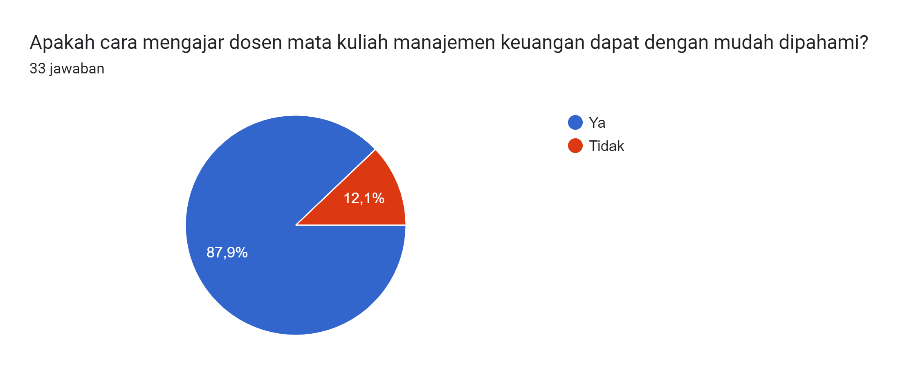
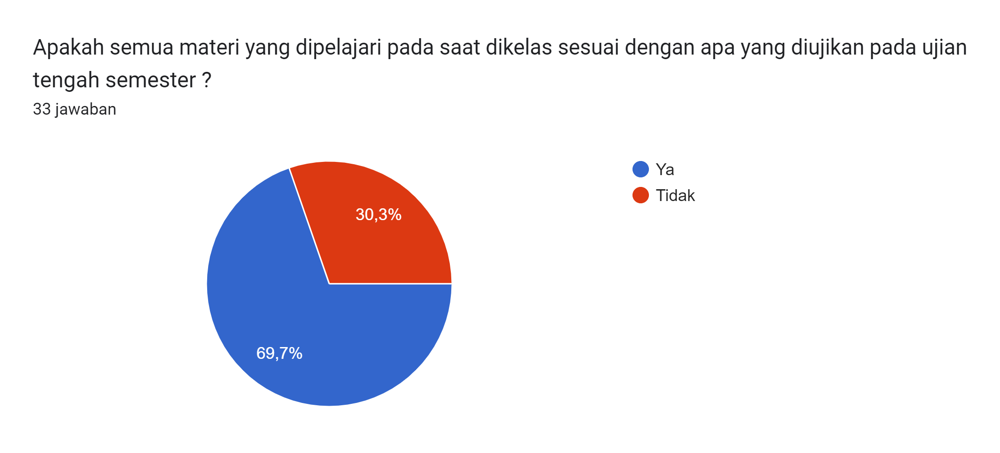
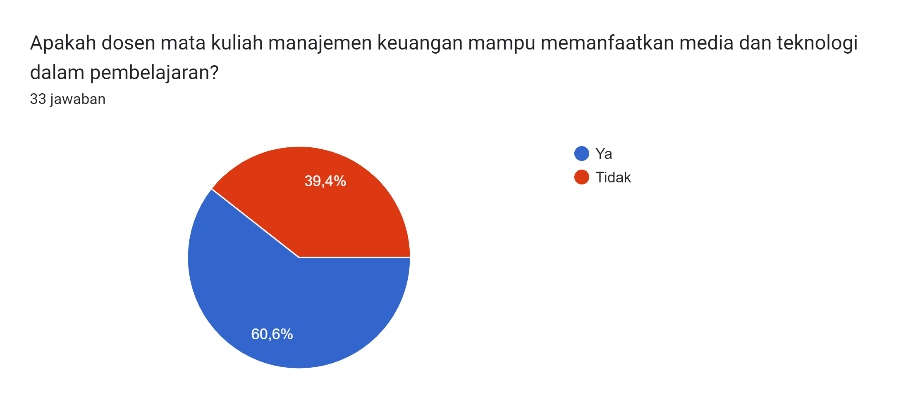
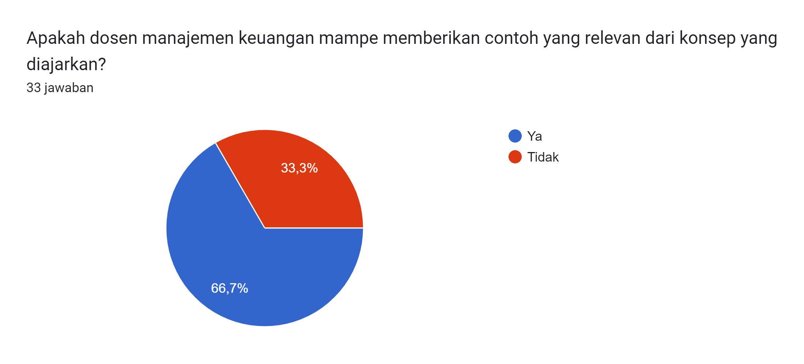
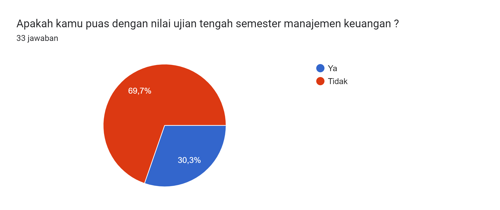

Melihat Hubungan jumlah kehadiran dengan nilai UTS manajemen keuangan kelas PI3C
Metode Penelitian Politeknik APP Jakarta
1 Pendahuluan
1.1 Latar belakang
Manajemen Keuangan adalah salah satu mata kuliah yang dipelajari di Politeknik APP Jakarta pada semester 3 yang mempelajari tentang bagaimana cara kita mengatur serta mengelola arus masuk dan keluarnya uang yang secara umum digunakan oleh sebuah perusahaan.
Keuangan dalam sebuah perusahaan menjadi pondasi yang kuat terbangunnya sebuah perusahaan. Keuangan juga bersifat sangat riskan. Jika tidak dikelola dengan baik akan menjadi amburadul dan tentunya akan menghentikan jalannya sebuah perusahaan. Dalam sebuah perusahaan dibutuhkan bidang sendiri yang mengurus bagian keuangan atau bisa juga disebut manajemen keuangan.
Manajemen keuangan adalah kegiatan perencanaan, pengelolaan, penyimpanan, serta pengendalian dana dan aset yang dimiliki suatu perusahaan. Pengelolaan keuangan harus direncanakan dengan matang agar tidak timbul masalah di kemudian hari.
1.2 Ruang lingkup
Ruang Lingkup Penelitian
Jenis penelitian ini adalah penelitian kuantitatif dengan mencari hubungan asosiatif yang bersifat kausal. Sugiyono (2008: 36) menyatakan bahwa penelitian asosiatif adalah penelitian yang bersifat menanyakan hubungan antara dua variabel atau lebih. Hubungan Kausal adalah hubungan yang bersifat sebab akibat. Jadi dalam penelitian ini ada variabel independen (variabel yang mempengaruhi) dan dependen (dipengaruhi) Untuk menganalisis variabel independen (X) yang terdiri dari variabel Jumlah kehadiran terhadap variabel dependen yaitu Nilai UTS manajemen keuangan (Y), maka dalam penelitian ini digunakan teknik analisis regresi Linier berganda, dengan teknik tersebut akan dapat diuji hipotesis yang menyatakan ada pengaruh secara parsial dan pengaruh secara simultan antara variabel independen (X) yaitu jumlah kehadiran (X) terhadap variabel dependen (Y), yaitu Nilai UTS manajemen keuangan.
1.3 Rumusan masalah
Apakah ada hubungannya jumlah kehadiran ddengan penilaian khususnya dalam UTS Manajemen keuangan?
Apakah dosen pengajar juga mempengaruhi penilaian khususnya dalam UTS Manajemen keuangan?
Mengapa mahasiswa tidak menghadiri perkuliahan manajemen keuangan?
1.4 Tujuan dan manfaat penelitian
Tujuan dari penelitian ini untuk mengetahui apakah kehadiran pada saat kelas dapat mempengaruhi nilai UTS manajemen keuangan kelas PI3C. dari sini diharapkan para mahasiswa terutama dapat memahami seberapa pentingnya kehadiran untuk penilaian khususnya dalam penelitian ini nilai UTS manajemen keuangan kelas PI3C. maupun nantinya untuk mata kuliah lainnya.
2 Studi pustaka
Topik : Mahasiswa
Menurut Hartaji (2012), mahasiswa adalah seseorang yang tengah menimba ilmu atau belajar dan terdaftar pada salah satu bentuk perguruan tinggi, yang terdiri dari akademi, politeknik, sekolah tinggi, institut, hingga universitas.
Sementara itu, Siswoyo (2007) juga mengemukakan definisi mahasiswa yakni individu yang sedang menuntut ilmu di tingkat perguruan tinggi, baik negeri maupun swasta, atau lembaga lain yang setingkat dengan perguruan tinggi.
Lalu, menurut Daldiyono (2009), mahasiswa adalah seseorang yang sudah lulus dari Sekolah Menengah Akhir (SMA) dan tengah menempuh pendidikan tinggi.
Mahasiswa biasanya dinilai memiliki tingkat intelektualitas yang tinggi, kecerdasan dalam berpikir, serta perencanaannya dalam bertindak. Maka dari itu, berpikir kritis dan bertindak secara cepat serta tepat menjadi sifat yang cenderung melekat pada diri setiap mahasiswa.
Seorang mahasiswa biasanya berusia 18 hingga 25 tahun. Pada usia tersebut merupakan masa akhir dari remaja dan masa awal untuk fase dewasa, sehingga dapat disebut bahwa usia mahasiswa adalah fase dimana individu dapat memantapkan pendirian hidupnya.
Nah, berdasarkan pendapat dari beberapa tersebut, dapat disimpulkan bahwa mahasiswa adalah status bagi seseorang yang berusia 18 hingga 25 tahun dan telah lulus dari Sekolah Menengah Atas (SMA) lalu melanjutkan pendidikannya di salah satu bentuk perguruan tinggi.
3 Apa Saja Tugas dan Kewajiban Mahasiswa?
Hampir sama dengan siswa di Sekolah Menengah Atas (SMA) yang diharuskan belajar, mahasiswa juga diwajibkan untuk demikian. Hal tersebut supaya sejalan dengan peran mahasiswa bagi bangsa dan negara ini.
Menurut Siallagan (2011), di lingkungan kampus, mahasiswa akan berperan sebagai masyarakat kampus yang mempunyai tugas utama berupa belajar, membaca buku yang relevan dengan materi perkuliahan, membuat makalah, presentasi, berdiskusi, hadir di sebuah seminar, dan kegiatan lain yang bercorak kekampuasan.
Di samping itu, mahasiswa juga memiliki tugas lain yakni sebagai agen perubahan dan pengontrol sosial masyarakat. Nah, tugas inilah yang nantinya dapat menjadikan seorang mahasiswa sebagai harapan bangsa di masa depan kelak dengan mencari solusi dari berbagai masalah yang tengah dihadapi. Sama halnya dengan individu lain yang berperan sebagai masyarakat sosial, maka mahasiswa juga memiliki kewajiban untuk menjaga nama baik universitas karena disitulah mereka “tinggal” sekarang.
Berikut adalah beberapa kewajiban yang harus dijalankan mahasiswa,
Bertaqwa dan berakhlak mulia
Mematuhi segala peraturan yang berlaku di, baik di tingkat jurusan, fakultas, hingga universitas.
Terlibat aktif dalam kegiatan kemahasiswaan.
Menjaga nama baik, citra, dan kehormatan universitas.
Saling menghormati sesama mahasiswa dan bersikap sopan kepada dosen hingga karyawan.
4 Metode penelitian
4.1 Data
4.2 Metode analisis
Metode yang dipilih adalah regresi univariat atau Ordinary Least Square (OLS) dengan 1 variabel independen. Penelitian ini merbaksud mencari hubungan antara jumlah kehadiran dan Nilai UTS manajemen Keuangan PI3C. Spesifikasi yang dilakukan adalah:
pertama saya menggunakan kuesioner dimana nantinya akan menjadi sumber data untuk mencari hubungan antara jumlah kehadiran dengan nilai UTS Manajemen Keuangan kelas PI3C, tidak hanya nilai UTS dan jumlah kehadiran saja saya juga memasukan beberapa pertanyaan terkait mata kuliah manajemen keuangan, berikut hasilnya: 
   
5 Pembahasan
5.1 Pembahasan masalah

Ini merupakan gambar plot awal untuk data yang digunakan

dan ini merupakan gambar plot error ketika sudah di regresi
dari gambar plot error dapat kita lihat masih terdapat sedikit pola
Selanjutnya jika kita lihat dari hasil kuesioner yang telah diisi oleh 33 responden, rata rata lebih dari 60% mahasiswa kelas PI3C merasa bahwa dosen mata kuliah manajamen keuangan mampu memberikan materi yang baik dan dapat diterima oleh mahasiswa, sedangkan 60 % lebih merasa tidak puas dengan nilai yang didapat pada saat UTS ini mungkin opini pribadi para mahasiswa.
5.2 Analisis masalah
Hasil regresinya adalah
Call: lm(formula = y ~ x, data = dat)
Residuals: Min 1Q Median 3Q Max -35.636 -8.971 4.141 11.252 22.805
Coefficients: Estimate Std. Error t value Pr(>|t|)
(Intercept) 61.4185 11.6352 5.279 9.66e-06 ***
x 0.8882 1.8411 0.482 0.633
— Signif. codes: 0 ‘’ 0.001 ’’ 0.01 ’’ 0.05 ‘.’ 0.1 ’ ’ 1
Residual standard error: 13.89 on 31 degrees of freedom Multiple R-squared: 0.007452, Adjusted R-squared: -0.02457 F-statistic: 0.2327 on 1 and 31 DF, p-value: 0.6329
Dapat kita terjemahkan secara sederhana yaitu :
Y^=61.4185+0,8882X
misalnya satuan diukur dalam harian, 0,8882/7 = 0,1268
terjemahannya: jika kehdiran ↑↑ 1 hari, nilai UTS manajemen keuangan ↑↑ 0,1268
6 Kesimpulan
Dalam penelitian ini kita dapat melihat bahwa tingkat kehadiran juga cukup mempengaruhi penilaian dan tidak hanya itu dosen juga lumayan mempengaruhi dalam penilaian. dari sini mahasiswa diharapkan dapat memanfaatkan segala waktu ataupun jadwal yang telah ditentukan agar dapat mengikuti kegiatan belajar mengajar di kelas.
7 Referensi
https://www.gramedia.com/best-seller/apa-itu-mahasiswa/
https://deepublishstore.com/ruang-lingkup -penelitian/#Contoh_Ruang_Lingkup_Penelitian
https://accurate.id/marketing-manajemen/manajemen-keuangan/